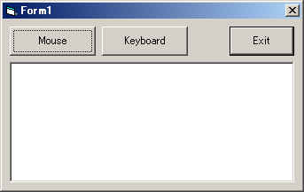

VBでマウスの動きを捉える方法(DirectInput編)
先のSetWindowHook()APIを使う方法では、
自アプリがアクティブの場合のみマウスの動きを捉えることができましたが、
他アプリでの動きを捉えるにはVC++等でDLLを作成する必要がありました。
今回ご紹介するDirectInputを使う方法では
やり方によっては他アプリ上でのマウス操作を捉えることができます。
またマウスの動きだけでなくキーボードの入力まで
捉えることが可能です。
フックによるマウス操作の捕捉は
OSからのメッセージをVBランタイム内のウィンドウプロシジャが受け取る前に
フックプロシジャで横取りすることで行っていました。
DirectInputでは仕組みはちょっと違います。
DirectInputの場合、マウスやキーボード、ジョイスティックなどの操作を
Windowsメッセージによらずにアプリケーションに報告します。
このため他アプリがアクティブであろうと
操作を取得することが可能な訳です。
DirectInputを使うための準備
DirectInputをVBから使うには「DirectX8 for Visual Basic Type Library」を参照設定します。
ちなみにDirectXの各バージョンは使える機能が異なる全く違うライブラリみたいなものですが
最新のものをインストールすれば前のバージョンも全てインストールされます。
（おかげでセットアップファイルのサイズがどんどんでかくなるｗ）
いつも通りサンプルプログラムを元に説明していきます。
こちらのサンプルプログラムを実行すると下記のウィンドウが開きます。

「Mouse」ボタンでマウス操作の捕捉を開始し、
「Keyboard」ボタンでキー操作の捕捉を開始します。
それぞれ再度押すと補足を中止します。（マウス操作は環境によっては補足をやめません^^;）
補足した操作は下のリストボックスに表示されます。（表示するだけでジェスチャのチェックまではしてません^^;）
このサンプルプログラムがアクティブでなく他のアプリがアクティブな状態でも
ちゃんとマウスとキーボードの状態変化を捉えていることが確認できると思います。
プログラムは全てForm1に書いてありますので、順に説明致します。
Option Explicit '/////////////////////////////////////////////////////// 'DirectInput '/////////////////////////////////////////////////////// '/////////////////////////////////////////////////////// Implements DirectXEvent8 |
Implements文の意味はヘルプで調べて下さい。。。では不親切かもしれないので簡単に説明します。
簡単にいえば「指定されたクラスのメソッド/プロパティを必ず持つ」ということの宣言になります。
ここの場合DirectXEvent8インターフェースのメソッドをこのフォームが持つということになります。
別の言い方をすれば「このForm1というフォームはDirectXEvent8インターフェースとしての一面を持っていますよ」
ということ宣言しているということです。
この結果DirectXEvent8インターフェースを引数に持つ関数にこのフォームを渡せることになります。
'/////////////////////////////////////////////////////// Private Const MAX_BUFFERSIZE As Long = 10 'マウス用バッファサイズ '/////////////////////////////////////////////////////// Private mDX As DirectX8 'DirectXオブジェクト Private mDI As DxVBLibA.DirectInput8 'DirectInputオブジェクト Private mDIDevM As DxVBLibA.DirectInputDevice8 'マウス用DirectInputDeviceオブジェクト Private mhEventM As Long 'マウス用イベントハンドル Private mDIDevK As DxVBLibA.DirectInputDevice8 'キー用DirectInputDeviceオブジェクト Private mhEventK As Long 'キー用イベントハンドル |
定数とモジュールレベルで存在する変数を定義しています。
各変数の意味や用途はその都度説明します。
'フォームロード時
Private Sub Form_Load()
'コントロールの初期化
chk_Mouse.Enabled = False
chk_Keyboard.Enabled = False
'DirectXオブジェクトの生成
Set mDX = New DxVBLibA.DirectX8
'DirectInputオブジェクトの生成
Set mDI = mDX.DirectInputCreate()
If mDI Is Nothing Then
MsgBox "DirectInputオブジェクトが生成できません。"
Exit Sub
End If
'マウスの準備
'DirectInputDeviceオブジェクトの生成
Set mDIDevM = mDI.CreateDevice("guid_SysMouse")
If mDIDevM Is Nothing Then
MsgBox "Mouse用DirectInputDeviceオブジェクトが生成できません。"
Else
'入力データ形式の設定
mDIDevM.SetCommonDataFormat DIFORMAT_MOUSE2
'強調レベルの設定
mDIDevM.SetCooperativeLevel Me.hWnd, DISCL_BACKGROUND Or DISCL_NONEXCLUSIVE
'イベントバッファの準備
Dim diprop As DxVBLibA.DIPROPLONG
With diprop
.lHow = DIPH_DEVICE
.lObj = 0
.lData = 10
End With
mDIDevM.SetProperty "DIPROP_BUFFERSIZE", diprop
'イベントの設定
mhEventM = mDX.CreateEvent(Me)
mDIDevM.SetEventNotification mhEventM
'チェックボックスを使用可能にする
chk_Mouse.Enabled = True
End If
'キーの準備
Set mDIDevK = mDI.CreateDevice("GUID_SysKeyboard")
If mDIDevK Is Nothing Then
MsgBox "Keyboard用DirectInputDeviceオブジェクトが生成できません。"
Else
'入力データ形式の設定
mDIDevK.SetCommonDataFormat DIFORMAT_KEYBOARD
'強調レベルの設定
mDIDevK.SetCooperativeLevel Me.hWnd, DISCL_BACKGROUND Or DISCL_NONEXCLUSIVE
'イベントの設定
mhEventK = mDX.CreateEvent(Me)
mDIDevK.SetEventNotification mhEventK
'チェックボックスを使用可能にする
chk_Keyboard.Enabled = True
End If
End Sub
|
フォームロード時にはコントロールの初期化、DirectX(DirectInput)の準備、
マウス捕捉の準備、キーボード捕捉の準備を行っています。
'フォームロード時
Private Sub Form_Load()
'コントロールの初期化
chk_Mouse.Enabled = False
chk_Keyboard.Enabled = False
|
まずマウスとキーの各情報を取得するかのスイッチであるチェックボックスを使用不可にしています。
各チェックボックスは情報取得の準備が成功したときに使用可能にしています。
'DirectXオブジェクトの生成
Set mDX = New DxVBLibA.DirectX8
'DirectInputオブジェクトの生成
Set mDI = mDX.DirectInputCreate()
If mDI Is Nothing Then
MsgBox "DirectInputオブジェクトが生成できません。"
Exit Sub
End If
|
DirectX、DirectInputオブジェクトの生成を行っています。
DirectXの各オブジェクトは親と言えるオブジェクトから子のオブジェクトを作っていきます。
DirectX → DirectInput → DirectInputDevice
'マウスの準備
'DirectInputDeviceオブジェクトの生成
Set mDIDevM = mDI.CreateDevice("guid_SysMouse")
If mDIDevM Is Nothing Then
MsgBox "Mouse用DirectInputDeviceオブジェクトが生成できません。"
Else
|
マウスの動き取得用のDirectInputDeviceオブジェクトを生成します。
DirectInputDeviceオブジェクトはその名が示すようにデバイス毎に作成します。
デバイスとはマウスやキーボード、ジョイスティックなどです。
マウスやキーボードはシステムに一つしかない(複数あっても一つと見なされる)ので
CreateDeviceメソッドに"guid_SysMouse"又は"GUID_SysKeyboard"を指定できます。
ジョイスティックなどは複数存在しますので列挙し目的のジョイスティックのGUIDを指定します。
'入力データ形式の設定
mDIDevM.SetCommonDataFormat DIFORMAT_MOUSE2
|
取得するデータ形式を設定します。以下のようなものを指定できます。
| 引数 | 取得するデータ形式 |
| DIFORMAT_JOYSTICK | 通常のジョイスティックやジョイパッド |
| DIFORMAT_JOYSTICK2 | フォースフィードバックとかがついているジョイスティック |
| DIFORMAT_KEYBOARD | キーボード |
| DIFORMAT_MOUSE | ４ボタンまでのマウス |
| DIFORMAT_MOUSE2 | ８ボタンまでのマウス |
なぜデータ形式を指定する必要があるかというと、
マウスとテンキーがくっついているようなデバイスも世の中にはあるので
一つのデバイス(同じGUID)で複数のデータ形式が取得できる場合があるためです(たぶん)。
'強調レベルの設定
mDIDevM.SetCooperativeLevel Me.hWnd, DISCL_BACKGROUND Or DISCL_NONEXCLUSIVE
|
強調レベルを指定します。
第一引数はターゲットのウィンドウハンドルですので自分自身のウィンドウを指定します。
大切なのは第二引数のフラグで、主に下記の４つの組み合わせになります。
| 引数 | 取得するデータ形式 |
| DISCL_BACKGROUND | 自アプリがアクティブでなくとも状態を取得できる |
| DISCL_FOREGROUND | 自アプリがアクティブであるときのみ状態を取得できる |
| DISCL_EXCLUSIVE | 自アプリのみ状態を取得できる |
| DISCL_NONEXCLUSIVE | 自アプリ以外も状態を取得できる |
実際には２種類のON/OFFなので組み合わせ的には４つになります。
| 引数 | 取得するデータ形式 |
| DISCL_FOREGROUND + DISCL_EXCLUSIVE | 自アプリがアクティブ時のみ取得し、自アプリがデバイスを占有する |
| DISCL_FOREGROUND + DISCL_NONEXCLUSIVE | 自アプリがアクティブ時のみ取得し、他アプリもデバイスを使える |
| DISCL_BACKGROUND + DISCL_EXCLUSIVE | 自アプリがアクティブでないときも取得し、自アプリがデバイスを占有する |
| DISCL_BACKGROUND + DISCL_NONEXCLUSIVE | 自アプリがアクティブでないときも取得し、他アプリもデバイスを使える |
またDISCL_NOWINKEYというフラグがあり、Windowsキーを無効にできたりします。
（ただしアクションマッピングを設定しないとダメ。
単純に自アプリアクティブ時に禁止させるだけならDISCL_FOREGROUNDにすればよい。)
今回はどのアプリがアクティブであっても情報を取得したくかつ占有する必要はないので、
（マウスの場合DISCL_BACKGROUND+DISCL_EXCLUSIVEはできない。ジョイスティック専用）
DISCL_BACKGROUND + DISCL_NONEXCLUSIVEを指定します。
'イベントバッファの準備
Dim diprop As DxVBLibA.DIPROPLONG
With diprop
.lHow = DIPH_DEVICE
.lObj = 0
.lData = MAX_BUFFERSIZE
End With
mDIDevM.SetProperty "DIPROP_BUFFERSIZE", diprop
|
マウスの動きはバッファモードで取得したいので情報を蓄積するバッファを準備します。
これは動作情報を全て取得したいときに使用します。
（バッファからあふれない限り全ての反応を取得できます。まぁマウスなら１０もあれば十分じゃないのかな？）
設定はDIPROPLONG型の各メンバに値をセットして
SetPropertyメソッドで設定します。
SetPropertyメソッドの第一引数"DIPROP_BUFFERSIZE"がバッファサイズであること示してます。
ちなみにSetPropertyメソッドではジョイスティックのデッドゾーン(無効範囲)などの設定も行えます。
またGetPropertyメソッドで細分度(マウスホイールの感度)などを取得できます。
マウスホイールは上回転/下回転って情報だけでなく、
ゆっくりまわしたかいきおいよく回したかも取得できるんですよ。
（マウスが対応していれば。Intellimouseとかだとかなり細かくとれます）
'イベントの設定
mhEventM = mDX.CreateEvent(Me)
mDIDevM.SetEventNotification mhEventM
|
イベントを受け取るイベントハンドラを登録します。
ここで先に説明した「Implements DirectXEvent8」が関係してきます。
DirectXEvent8インターフェースとして振舞うことが可能となったForm1(Me)を引数に
DirectXオブジェクトのCreateEventメソッドを呼び出してイベントハンドルを取得し、
DirectInputDeviceオブジェクトのSetEventNotificationメソッドに渡します。
これによりマウス用DirectInputDeviceオブジェクト(mDIDevM)で
情報(マウスの動き)を取得したときForm1のDirectXEvent8_DXCallbackが呼び出されるようになる訳です。
またCreateEventメソッドの戻り値はイベントを識別するためのハンドルになります。
マウスの動きがあったときも、キーボードの状態が変化したときも同じDirectXEvent8_DXCallbackが呼び出されるようにするので
どちらのイベントが起きたのかの判断に必要になります。
このためフォームレベルで宣言した変数に退避しておくわけです。
'チェックボックスを使用可能にする
chk_Mouse.Enabled = True
End If
|
ここまででマウスの捕捉準備が整ったのでチェックボックス(「Mouse」ボタン)を使用可能にします。
'キーの準備
Set mDIDevK = mDI.CreateDevice("GUID_SysKeyboard")
If mDIDevK Is Nothing Then
MsgBox "Keyboard用DirectInputDeviceオブジェクトが生成できません。"
Else
'入力データ形式の設定
mDIDevK.SetCommonDataFormat DIFORMAT_KEYBOARD
'強調レベルの設定
mDIDevK.SetCooperativeLevel Me.hWnd, DISCL_BACKGROUND Or DISCL_NONEXCLUSIVE
'イベントの設定
mhEventK = mDX.CreateEvent(Me)
mDIDevK.SetEventNotification mhEventK
'チェックボックスを使用可能にする
chk_Keyboard.Enabled = True
End If
|
キーの捕捉準備も基本的に同じです。
違うところはDirectInputオブジェクトのCreateDeviceメソッドにキーボードであることの"GUID_SysKeyboard"を指定することと
SetCommonDataFormatでの入力データ形式を「DIFORMAT_KEYBOARD」にすること
キーの入力はバッファリングモードを使わないためにその部分の処理がないことです。
次に捕捉を開始します。
｢Mouse｣ボタンと｢Keyboard｣ボタン（どっちもチェックボックス）がクリックされたときに
その状態によってアクセス権の取得と破棄を行います。
'マウス情報へのアクセスON/OFF
Private Sub chk_Mouse_Click()
Select Case chk_Mouse.Value
Case 0 'OFF
If Not mDIDevM Is Nothing Then
'アクセス権の破棄
mDIDevM.Unacquire
End If
Case 1 'ON
If Not mDIDevM Is Nothing Then
'アクセス権の取得
mDIDevM.Acquire
End If
End Select
End Sub
'キーボード情報へのアクセスON/OFF
Private Sub chk_Keyboard_Click()
Select Case chk_Keyboard.Value
Case 0 'OFF
If Not mDIDevK Is Nothing Then
'アクセス権の破棄
mDIDevK.Unacquire
End If
Case 1 'ON
If Not mDIDevK Is Nothing Then
'アクセス権の取得
mDIDevK.Acquire
End If
End Select
End Sub
|
マウスやキーボードの動き情報を取得するためには「アクセス権」を取得する必要があります。
アクセス権を取得するにはDirectInputDeviceオブジェクトのAcquireメソッドを呼び出します。
破棄するにはUnacquireメソッドを呼びます。
アクセス権を取得したのちマウスを動かしたりキーを押したりすると
DirectXEvent8_DXCallbackが呼び出されます。
'DirectXイベント処理
Private Sub DirectXEvent8_DXCallback(ByVal eventid As Long)
Dim x As Long
Select Case eventid
Case mhEventM 'マウスのイベント
'情報を取得するバッファを準備
Dim devdata(MAX_BUFFERSIZE - 1) As DxVBLibA.DIDEVICEOBJECTDATA
'情報を取得
Dim datacnt As Long
On Error Resume Next
datacnt = mDIDevM.GetDeviceData(devdata, DIGDD_DEFAULT)
If Err Then
'情報が取得できなかった
datacnt = 0
'再度アクセス権を要求
mDIDevM.Acquire
End If
On Error GoTo 0
'取得した情報の表示
For x = 0 To datacnt - 1
With devdata(x)
Select Case .lOfs
Case DIMOFS_X
AddMessage .lSequence, "X Move " + Format$(.lData)
Case DIMOFS_Y
AddMessage .lSequence, "Y Move " + Format$(.lData)
Case DIMOFS_Z
AddMessage .lSequence, "Z Move " + Format$(.lData)
Case DIMOFS_BUTTON0
AddMessage .lSequence, "Button0 " + Format$(.lData)
Case DIMOFS_BUTTON1
AddMessage .lSequence, "Button1 " + Format$(.lData)
Case DIMOFS_BUTTON2
AddMessage .lSequence, "Button2 " + Format$(.lData)
Case DIMOFS_BUTTON3
AddMessage .lSequence, "Button3 " + Format$(.lData)
Case DIMOFS_BUTTON4
AddMessage .lSequence, "Button4 " + Format$(.lData)
Case DIMOFS_BUTTON5
AddMessage .lSequence, "Button5 " + Format$(.lData)
Case DIMOFS_BUTTON6
AddMessage .lSequence, "Button6 " + Format$(.lData)
Case DIMOFS_BUTTON7
AddMessage .lSequence, "Button7 " + Format$(.lData)
Case Else
AddMessage .lSequence, "Unknown " + Format$(.lData)
End Select
End With
Next
Case mhEventK 'キーボードのイベント
'全てのキー状態を取得
Dim keystate As DIKEYBOARDSTATE
mDIDevK.GetDeviceStateKeyboard keystate
'キー状態を表示
Dim keymsg As String
For x = 0 To 255
If keystate.Key(x) And &H80 Then
keymsg = keymsg + Right$("0" + Hex$(x), 2) + " "
End If
Next
If keymsg <> "" Then
AddMessage 0, "KeyDown " + keymsg
End If
End Select
End Sub
|
まずDirectXEvent8_DXCallbackの引数eventIDの値がmhEventMなのかmhEventKなのかを判定します。
これは先に説明していますが、マウスによるイベントなのかキーボードによるイベントなのかを判断するためです。
マウスによるイベントの処理から説明していきます。
Case mhEventM 'マウスのイベント
'情報を取得するバッファを準備
Dim devdata(MAX_BUFFERSIZE - 1) As DxVBLibA.DIDEVICEOBJECTDATA
|
マウスの状態に変化(マウスが動かされた、または、ボタンが押された、またはボタンが離された)があったことは
このDirectXEvent8_DXCallbackが呼び出されたことでわかりました。
ですので、次はどのような変化があったのかを取得することになります。
これには二通りの方法があります。
（１）バッファの内容を見る
（２）現在のマウスの状態を取得する
（２）の方が簡単と言えば簡単なのですが、本当に今現在の状態しかわかりません。
つまり、ボタンを押してすぐ離したなんて場合、「現在の状態」ではボタンがすでに離されている可能性があるので
押されたのかどうかがわからない訳です。
しかし（１）の方法ならば前回のイベント発生から今回までの間に起きた変化がすべてバッファに蓄積されているので、
それを順に調べていくことで確実に変化を検知できる訳です。
ボタンの押下では問題になりにくいですが、マウスカーソルを自前で描画するようなゲームだと
動きの変化を取得できないと反応が悪く感じられちゃうんですよね。
（なおバッファリングモードでも取得をしないでおくとバッファがあふれます。）
で、ここでは（１）の方法をとります。
（そのために準備段階でバッファリングを行うことを指定しているので^^;）
で、変化内容を取得するためのバッファ領域を確保するのが上のコードになります。
DIDEVICEOBJECTDATA型の配列を先のSetPropertyメソッドで指定したバッファサイズの分だけ確保します。
'情報を取得
Dim datacnt As Long
On Error Resume Next
datacnt = mDIDevM.GetDeviceData(devdata, DIGDD_DEFAULT)
If Err Then
'情報が取得できなかった
datacnt = 0
'再度アクセス権を要求
mDIDevM.Acquire
End If
On Error GoTo 0
|
バッファ領域を確保しましたら蓄積されている変化情報を読み込みます。
読み込みはGetDeviceDataメソッドで行います。
戻り値として格納された件数が返されます。
なお取得に失敗した場合は再度アクセス権を取得するようにします。
'取得した情報の表示
For x = 0 To datacnt - 1
With devdata(x)
Select Case .lOfs
Case DIMOFS_X
AddMessage .lSequence, "X Move " + Format$(.lData)
Case DIMOFS_Y
AddMessage .lSequence, "Y Move " + Format$(.lData)
Case DIMOFS_Z
AddMessage .lSequence, "Z Move " + Format$(.lData)
Case DIMOFS_BUTTON0
AddMessage .lSequence, "Button0 " + Format$(.lData)
Case DIMOFS_BUTTON1
AddMessage .lSequence, "Button1 " + Format$(.lData)
Case DIMOFS_BUTTON2
AddMessage .lSequence, "Button2 " + Format$(.lData)
Case DIMOFS_BUTTON3
AddMessage .lSequence, "Button3 " + Format$(.lData)
Case DIMOFS_BUTTON4
AddMessage .lSequence, "Button4 " + Format$(.lData)
Case DIMOFS_BUTTON5
AddMessage .lSequence, "Button5 " + Format$(.lData)
Case DIMOFS_BUTTON6
AddMessage .lSequence, "Button6 " + Format$(.lData)
Case DIMOFS_BUTTON7
AddMessage .lSequence, "Button7 " + Format$(.lData)
Case Else
AddMessage .lSequence, "Unknown " + Format$(.lData)
End Select
End With
Next
|
変化情報はDIDEVICEOBJECTDATA型の配列に順番に格納されますので
あとはこれを先頭から見ていくことになります。
DIDEVICEOBJECTDATA型は下記のように定義されています。
Type DIDEVICEOBJECTDATA lData As Long '変化情報 lOfs As Long '変化の種類 lSequence As Long '通番 lTimeStamp As Long 'タイムスタンプ lUserData As Long 'ユーザーデータ End Type |
まずlOfsの内容をみてどんな変化があったのかを調べます。
マウスの場合CONST_DIMOUSEOFS型の数値が入っています。
DIMOFS_BUTTON0～DIMOFS_BUTTON7 ボタンの変化 DIMOFS_X 横の動き DIMOFS_Y 縦の動き DIMOFS_Z ホイールの動き |
変化の内容はlDataに格納されています。
縦横及びホイールの動きは変化量が格納されています。
ボタンは押された場合128、離された場合0となります。
ここで注意が必要なのはそれぞれが同時に変化した場合です。
つまり斜めに移動した場合、縦の変化分、横の変化分がそれぞれ一件ずつバッファに格納されます。
移動をそのまま見てしまうと、真横に移動してからすぐに上下に移動された場合(実際には無理だろうけどｗ)と
斜めに移動されたのが区別できなくなってしまうんですね。
そこでlSequenceの値が重要になります。
つまりこの値が同じである場合、それは同時に変化したということになります。
サンプルプログラムではそこまでみてなくて、
バッファの内容をそのままリストボックスに追加しています。
（リストボックスへの追加はAddMessage関数で行っていますが詳細は省略します。）
以上でマウスの動きを捕捉できます。
次にキーボードの処理です。
Case mhEventK 'キーボードのイベント
'全てのキー状態を取得
Dim keystate As DIKEYBOARDSTATE
mDIDevK.GetDeviceStateKeyboard keystate
|
キーボードの場合はバッファリングモードを用いていないので
いきなり現在のキーボードの内容を取得しています。（もちろんバッファリングモードでも可能です。）
GetDeviceStateKeyboardメソッドで現在の状態を取得します。
DIKEYBOARDSTATE型の変数はKeyという256個分の配列で
各キーの状態が0：押されていない、128:押されているで表現されます。
どのキーが0～255のどこなのかはCONST_DIKEYFLAGS列挙型で定義されています。
なおDirectInputではテンキーの内容はNumLockの内容にかかわらずに取得できます。
またCapsやNumLockなどはトグル状態(一回押すと128、もう一回押すと0)で取得できます。
この辺は実際に押してみて表示してみればわかるでしょう。
複数のキーが同時に押されているときはそれぞれのキーの要素が128になります。
（なお組み合わせによってはわからなかったりしますが、これは昔からのPCの仕様です。
A,B,C,D,E,Fの同時押しは判断できません。指つりそうになるしねｗ）
'キー状態を表示
Dim keymsg As String
For x = 0 To 255
If keystate.Key(x) And &H80 Then
keymsg = keymsg + Right$("0" + Hex$(x), 2) + " "
End If
Next
If keymsg <> "" Then
AddMessage 0, "KeyDown " + keymsg
End If
|
サンプルプログラムでは押されているキーのコード(正確にはインデックス番号)を16進で表示しています。
以上がキーボードの状態取得になります。（バッファリングモードより楽でしょ^^）
このようにDirectInputを使うことにより多少の制限はありますが、
他アプリでのマウスやキーボードの入力をVBで簡単に取得することができるのです。
簡単にまとめますと、下記のようになります。
①DirectXオブジェクトを生成
②DirectInputオブジェクトを生成（DirectXオブジェクトのDirectInputCreateメソッド）
③取得するデバイス毎にDirectInputDeviceオブジェクトを生成(DirectInputオブジェクトのCreateDeviceメソッド)
④入力データ形式の設定(DirectInputDeviceオブジェクトのSetCommonDataFormatメソッド)
⑤強調レベルの設定(DirectInputDeviceオブジェクトのSetCooperativeLevelメソッド)
⑥必要があればバッファリングモードの設定(DirectInputDeviceオブジェクトのSetPropertyメソッド)
⑦イベントの設定(DirectXオブジェクトのCreateEventメソッド、及び、DirectInputDeviceオブジェクトのSetEventNotificationメソッド)
⑧アクセス権の取得(DirectInputDeviceオブジェクトのAcquireメソッド)
⑨DirectXEvent8_DXCallbackの引数(イベントハンドル)のチェック
⑩バッファリングモード時にはバッファを確保して蓄積データの取得(DirectInputDeviceオブジェクトのGetDeviceDataメソッド)
または直接状態の取得(DirectInputDeviceオブジェクトのGetDeviceStateKeyboardメソッドなど)
⑪終了時にはアクセス権の破棄とオブジェクトの開放(DirectInputDeviceオブジェクトのUnacquireメソッド)
こうやって並べてみるとかなり面倒そうに感じますが、
やってみるとそんなに難しくはないです。
DirectInputを使う方法はフックと違い、情報の取得のみが可能です。
フックの場合は情報の変更まで可能ですのでより強力いえますが、
フックプロシジャを用意しなければならないなどDirectInputより面倒ですね。
DirectInputを使えばVBだけで汎用マウスジェスチャやマウスボタンにキー割り当てなどを行うツールが作れると思います。
（時間があったら作ってみようかな。;）
MicrosoftのIntelliMouse 4.0に付属するIntelliPoint5.0があまりにもダメだし^^;
バージョンアップしたらすんごく使えるようになりました。^^）
VB.Net(VB2005)から使用する方法は、別ページになってます。
上のメニューからどうぞ。